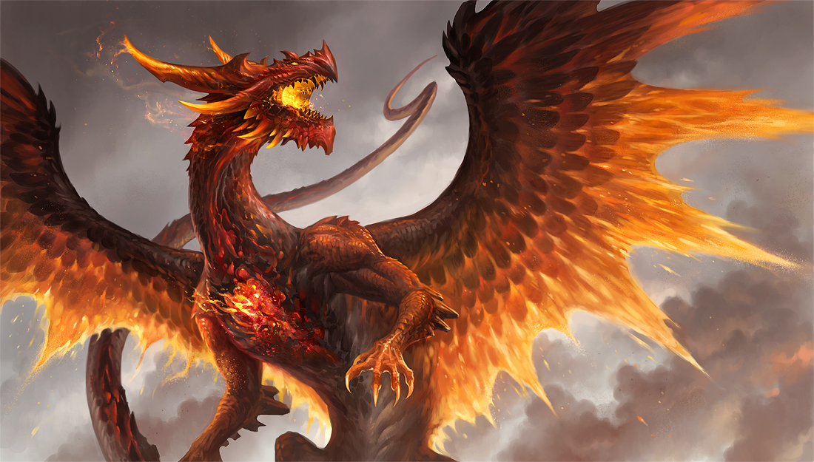

My name is Maggie, and I gained the ability to transform into a dragon at will. When I was 13, I acquired the powers from a mysterious necklace that I found in a ruinic cave. Like a young idiot, it's beauty captivated me and I put it on. I haven't been able to take it off since, but I'm okay with that. After all, I can turn into a giant firebreathing lizard. I use this power to protect people I see in need, but I try to stay under the radar. Don't want the government to catch me and use me as their lab rat.
How it Works
